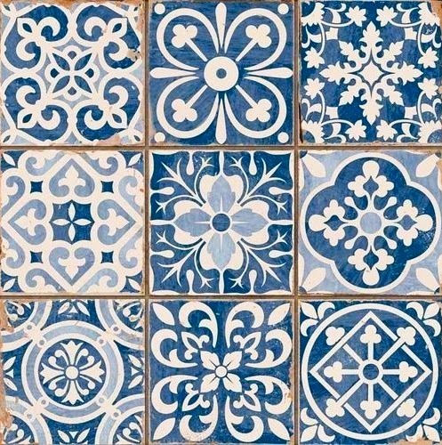

Postdoctoral Research Fellow (10/2024-), Institute of Linguistics, National Tsing Hua University
Part-time Lecturer (02/2024-), Dept of Foreign Languages & Literatures, National Chung Hsing University
Current research topics
non-canonical wh-interrogatives, mood & modal system, negation, scalarity & additivity, grammaticalization, Old Vietnamese.
Updates
- 27/2/2026: Conditional evaluative constructions in Vietnamese | Talk @ ISVL-6 (U of Venice); w Alex Wimmer & Daniel Hole
- 18/2/2026: Mandarin shì and Vietnamese là: A Tale of Two Complementizers | Lecture @ CHiLL (Leiden U); w/ Roger Liao
- 19/3/2025: Locative Wh as Negation in Vietnamese | Talk @ TEAL-14 (USC); w/ Dylan Tsai
- 30/1/2025: Vietnamese há and Chinese qǐ in rhetorical questions | Talk @ ISVL-5 (U of Venice); w/ Barbara Meisterernst
- 19/1/2025: Scalar EVENs in Vietnamese and Chinese | Colloquium talk @ Joint Research Colloquium in Linguistics (U of Stuttgart)
- 10/2024: Vietnamese mình: Attitudes, empathy and the blocking effect | Invited talk @ FOSS-15 (NTNU, Taipei); w/ Tim Chou
- 10/2023: Every 'where' all at once: Vietnamese đâu from a comparative perspective | Talk @ IWSC2023 (BLCU, Beijing); w/ Dylan Tsai
- 5/2022: (Một) cái: a case of grammaticalization in Vietnamese. Talk @ SEALS 31 (U of Hawaiʻi at Mānoa)
